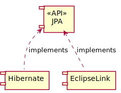

Environnement d’exécution
Fournit des services standards
Une spécification unique
De multiples implémentations
Plate-forme bâtie au-dessus du langage Java
Java SE
Java ME
Ensemble de spécifications
Une par fonctionnalité
API
Oracle est l’éditeur
Des tiers fournissent les implémentations
| API | Fonctionnalité |
|---|---|
JTA | Gère les transactions distribuées |
JavaMail | Crée, envoie et réceptionne les mails |
JAX-WS | Génère et appelle des web services SOAP |
JAX-RS | Génère et appelle des web services REST |
CDI | Injection de dépendances |
Preuve formelle qu’il est possible d’implémenter la spécification
Responsabilité du Spec Lead
Exemple :
Weld est la RI de CDI
Séparation nette
Via des composants séparés (JAR)

Ensemble des tests de chaque spécification
Permet à une plate-forme d’être certifiée compatible avec une version de Java EE
Disponible sous license GPL
Une version unique pour la plate-forme
La version actuelle est 1.7
Une version spécifique pour chaque API, par exemple :
JTA 1.1
JMX 1.0
Offre les fonctionnalités de Java EE via les API
Permet la portabilité d’applications Java EE entre différents serveurs d’applications
Portabilité toute relative
| Editeur | Serveur d’apps | License |
|---|---|---|
IBM | Websphere AS | Commercial |
Oracle | WebLogic | Commercial |
Red Hat | WildFly | LGPL 2.1 |
Tomitribe | TomEE | Apache v2 |
Payara | Payara Server | CDDL / GPL v2 |
| Editeur | Serveur d’apps | License |
|---|---|---|
Apache | Tomcat | Apache v2 |
Eclipse | Jetty | Apache v2 / EPL |
Travail énorme pour implémenter l’intégralité des API Java EE
Permet de faciliter l’entrée de nouveaux acteurs avec des sous-ensembles
Profils disponibles :
Full
Web
Micro (Non standard !)
| Nom | Acronyme | Extension |
|---|---|---|
Java Archive | JAR | .jar |
JAR d’EJB | EJB JAR | .jar |
Resource Archive | RAR | .rar |
Web Archive | WAR | .war |
Enterprise Archive | EAR | .ear |
Comporte de nombreux JAR
Un (ou plusieurs) JAR par fonctionnalité
Standard
Non-standard
A deployment descriptor describes how a component, module or application should be deployed.
| Archive | Descripteur de déploiement |
|---|---|
JAR |
|
JAR d’EJB |
|
WAR |
|
EAR |
|
Main-Class: ch.frankel.app.EntryPointUne application est déployée dans un serveur d’applications
La norme Java EE garantit l’interopérabilité
Le déploiement d’applications est spécifique au type serveur d’applications